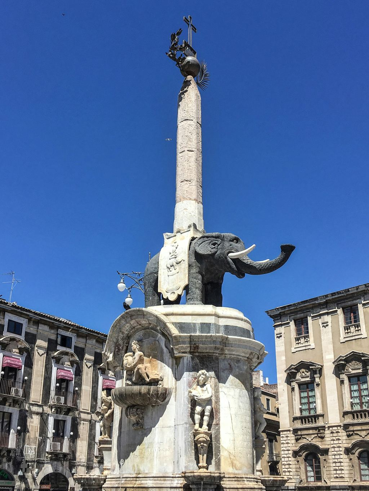
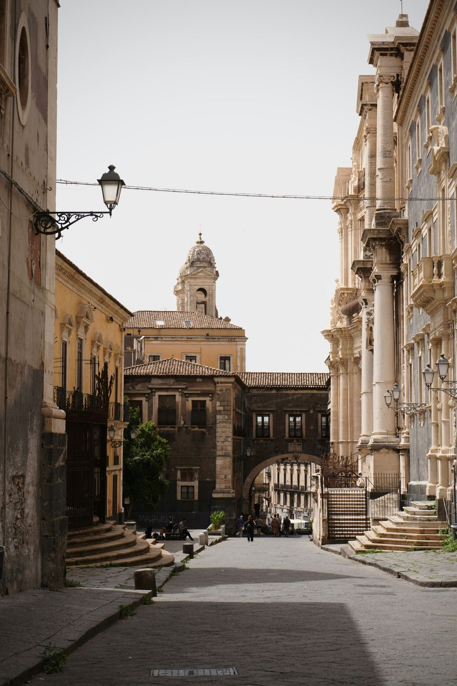
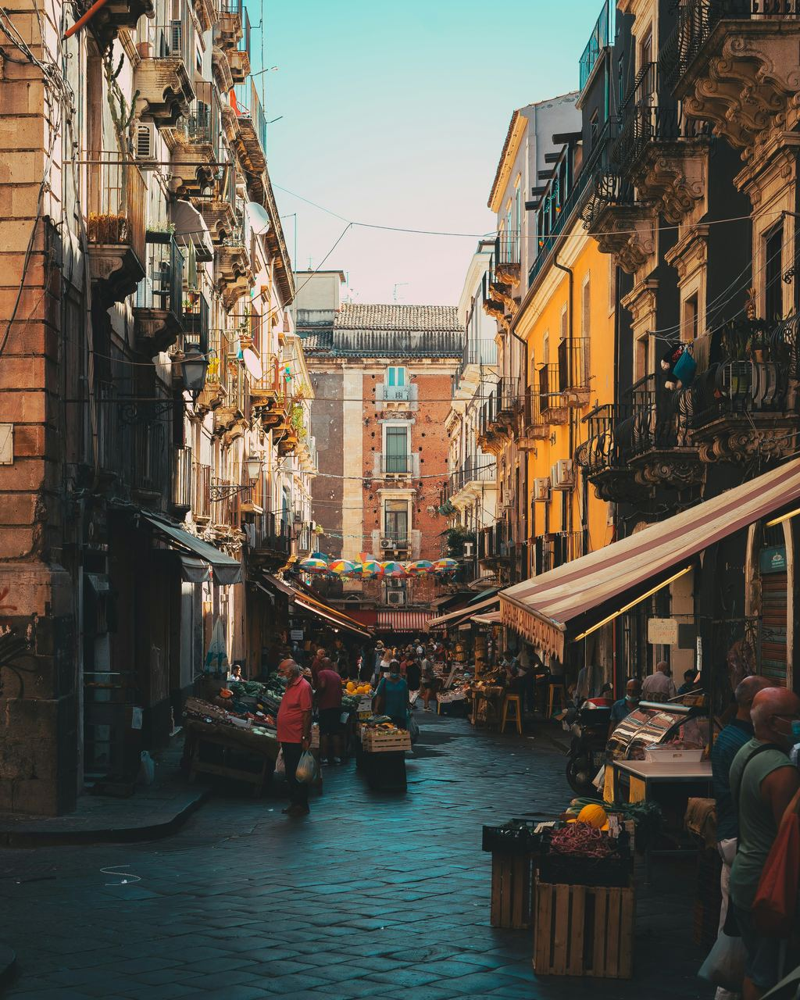

Camera 1
1 letto matrimoniale grande

Piedimonte Etneo · Sicilia orientale
Dove il respiro caldo dell'Etna incontra l'azzurro dello Ionio, tra il silenzio della montagna e il profumo del mare.
La casa
Piedimonte sta nel punto esatto in cui l'Etna smette di essere montagna e diventa campagna. Alle spalle il versante nord, con i suoi boschi e le colate vecchie di trent'anni. Davanti la riviera che scivola verso Naxos. Un paese di pietra scura e di agrumi, dove verso le otto di sera l'aria cambia e scende fresca da sopra, anche in pieno agosto.
L'appartamento è al primo piano di una palazzina quieta, con ascensore. Tre camere, due bagni, balconi abbastanza larghi da apparecchiarci. Dalla parte del vulcano l'Etna si vede per intero, dal cono innevato ai paesi di mezza costa. La cucina è attrezzata sul serio, pentole e taglieri compresi, per chi ha voglia di passare dal mercato e mettersi ai fornelli. Lenzuola e asciugamani ci sono. Il parcheggio in strada è libero.
Lo svincolo di Fiumefreddo, sulla A18 Messina-Catania, è a pochi minuti di strada: da qui tutta la Sicilia orientale, e non solo, si raggiunge in fretta.
Ad accogliervi sono Raffaele e Pina, che ospitano qui dal 2012.

Spazi e servizi
Quello che segue è preso dall'annuncio ufficiale, senza aggiunte.
Due matrimoniali e una con letti singoli, 6 letti in totale.
Doppi servizi, più un locale lavanderia con lavatrice.
Ampia e arredata nei dettagli, con tavolo e affaccio sul balcone.
Con vista panoramica sull'Etna: la colazione si fa fuori.
Connessione inclusa in tutto l'appartamento.
Impianto a pompa di calore, utile d'estate e nelle sere d'inverno.
Accesso comodo anche con bagagli o passeggino.
Sosta gratuita in strada. Non c'è posto auto riservato nell'alloggio.
Zona giorno ampia, con divani e tavolo da pranzo.
Locale dedicato con lavabiancheria.
La casa è tutta vostra, fino a 6 ospiti.
Lenzuola e asciugamani sono forniti dalla casa.
1 letto matrimoniale grande

1 letto matrimoniale grande, 2 letti singoli

2 letti singoli
Nota di sicurezza dichiarata dalla struttura: è presente un rilevatore di monossido di carbonio; non è presente un rilevatore di fumo.
Fotografie
Dove siamo
Piedimonte sta sul versante nord-orientale dell'Etna, sospeso fra il Parco del vulcano e lo Ionio. È una posizione di passaggio, e si sente: in una manciata di minuti si è a Linguaglossa e si sale verso Piano Provenzana, in un quarto d'ora si scende sulla ghiaia nera di Marina di Cottone, in mezz'ora si è sotto il Teatro Antico di Taormina.
A pochi passi dal portone c'è la stazione della Ferrovia Circumetnea. Il trenino gira attorno al vulcano fra vigne, colate e paesi di pietra scura, toccando Castiglione di Sicilia, Randazzo, Bronte e la Contea di Nelson. Ci mette il suo tempo, ed è esattamente il motivo per prenderlo.
Tempi di percorrenza in auto, indicativi, calcolati da Piedimonte Etneo.
Orari e fermate cambiano di stagione in stagione: conviene verificarli prima di partire con Raffaele e Pina.
Il territorio
Dalla lava all'acqua salata in mezz'ora. Le distanze sono stradali e indicative, misurate da Piedimonte.
Le fotografie dei luoghi qui sopra sono di fotografi che le hanno condivise su Unsplash. Il loro nome compare su ogni immagine e per esteso nella pagina dei crediti fotografici. Grazie a tutte e tutti.
Da chi ci vive
Poche righe, di quelle che si imparano soltanto abitandoci.
Le date civili cambiano ogni anno: se venite per una festa in particolare, chiedete conferma a Raffaele e Pina quando prenotate.
A quaranta minuti di autostrada
La stessa montagna che si vede dal balcone, quarantacinque chilometri più a sud, è diventata una città.
Nel 1669 la lava scese fino al mare e nel 1693 il terremoto finì il lavoro. Quello che si attraversa oggi è una città rifatta quasi tutta in una volta, con la stessa pietra scura e lo stesso barocco: dal 2002 il centro è patrimonio dell'umanità insieme alle altre città tardobarocche del Val di Noto.
È una città che si annusa prima di vederla: il pesce del mercato, il caffè dei chioschi, la brioche appena sfornata. Il barocco arriva dopo, girato l'angolo, e sorprende sempre.



Al centro della piazza un elefante di pietra lavica regge un obelisco egizio. I catanesi lo chiamano u Liotru ed è il simbolo della città: la fontana è del 1736, disegnata da Giovanni Battista Vaccarini.
Dedicata alla patrona, custodisce anche la tomba di Vincenzo Bellini. La facciata alterna il nero della lava al bianco del calcare, come quasi tutto il centro.
Il mercato del pesce, subito dietro il Duomo, in una piazza che scende sotto il livello della strada. Si va la mattina presto, prima delle undici, quando i banchi sono ancora pieni.
La strada dritta che taglia il centro da sud a nord. Guardando in fondo, oltre i palazzi, c'è il vulcano: è il motivo per cui la via si chiama così.
San Nicolò l'Arena, fra i complessi monastici più grandi d'Europa, oggi sede dell'università. Si visita con una guida: sotto i pavimenti ci sono una casa romana e la colata del 1669.
Un teatro antico incastrato fra i palazzi del quartiere Antico Corso, con l'acqua del fiume Amenano che continua a scorrere sotto le gradinate.
In piazza Stesicoro affiora un decimo appena della struttura, sotto il livello della strada. Il resto di quello che era uno degli anfiteatri più grandi d'Italia è rimasto sotto i palazzi, e ci è rimasto.
Voluto da Federico II nel Duecento, allora affacciato sul mare. La lava del 1669 gli è passata intorno e lo ha lasciato nell'entroterra. Dentro c'è il museo civico.
Duecento metri, quattro chiese, un arco che le scavalca. È la strada che i catanesi mostrano per prima quando vogliono far vedere il barocco.
La dimora dei principi Paternò Castello, cresciuta sulle mura di Carlo V dopo il terremoto del 1693. Il salone delle feste è rococò fino all'ultimo stucco, con una scala che sale al cupolino dove sedeva l'orchestra. È ancora una casa privata: si visita su prenotazione.
Il giardino pubblico con le scalinate e l'orologio di fiori, e a poche strade il teatro d'opera intitolato al compositore che qui è nato.
San Giovanni Li Cuti, una caletta di ciottoli neri fra le case, e più a sud la Playa, chilometri di sabbia chiara.
Per tre giorni la città smette di fare qualsiasi altra cosa. Migliaia di devoti in sacco bianco tirano il fercolo della patrona per le strade, di notte e di giorno, dietro le candelore portate a spalla. Una classifica non ufficiale, fondata sul numero di persone che scendono in strada, la mette terza fra le feste cattoliche del mondo: prima la Settimana Santa di Siviglia, seconda il Corpus Domini di Cuzco, e poi Catania.
L'arancino, che qui è maschile e ha la punta. La pasta alla Norma, melanzane fritte e ricotta salata. Il seltz limone e sale ai chioschi, la granita con la brioche a colazione, la cipollina calda mangiata camminando.
Circa 45 km dalla casa, poco più di quaranta minuti prendendo la A18 allo svincolo di Fiumefreddo. In alternativa il treno, dalla stessa stazione di Fiumefreddo fino a Catania Centrale. Conviene lasciare l'auto ai margini del centro: dentro si cammina meglio.
Idee di viaggio
Cinque giornate già pronte, costruite sulla posizione della casa.
Gli ospiti
Conteggio calcolato e pubblicato da Airbnb sull'annuncio: indica quante recensioni citano quell'aspetto.

Prenotazioni
Prenotate il vostro soggiorno tra l'Etna e Taormina. Disponibilità e prezzi aggiornati sui portali ufficiali.
Il pagamento e la cancellazione sono gestiti dal portale scelto.
Contatti
Per domande sulla casa, sugli orari di arrivo o su cosa fare in zona, rispondiamo in italiano e in inglese.
Prenotazione
Entrambi i portali mostrano le stesse date. Scegliete quello che usate di solito.